20 Amazing National Parks in the Netherlands
The Netherlands packs great natural diversity into quite a small space, and national parks have been cropping up around the country since the 1930s. In Limburg you can scale forested hills, while in North Brabant you may find yourself in a Sahara-like desert. There are hills chiselled by glaciers from Scandinavia, and a world of fens and canals at Weerribben-Wieden caused by centuries of peat cultivation. On the World Heritage Wadden Sea, you'll be in a different climate altogether, spotting seals and porpoises and staring at the wide horizons on dune-fringed beaches. The parks are all community assets with visitor centres run by conservation organisations or the Dutch government. These can be your first step for timeless days out hiking, bike-riding, and on cruises.

1. Hoge Veluwe National Park
Natural and cultural delights await at this 5,400-hectare region of woodland, dunes, and heathland in Gelderland. The park preserves about 5% of the Veluwe, the largest lowland natural terrain in Northwest Europe. It's a dream for cyclists, with over 40 kilometres of trails and free white bicycles to borrow. Best of all is the lakeside Kröller-Müller Museum, which has the largest private collection of Van Goghs in the world.
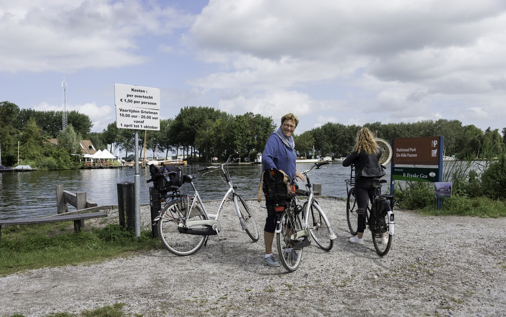
2. De Alde Feanen National Park
An extraordinary fenland region in Friesland spanning 4,000 hectares of lakes, peat bog, and grassland. Wildlife-lovers will be amazed by over 500 plant species and more than 100 species of breeding birds. Explore the park by motorboat, canoe, or guided cruise.
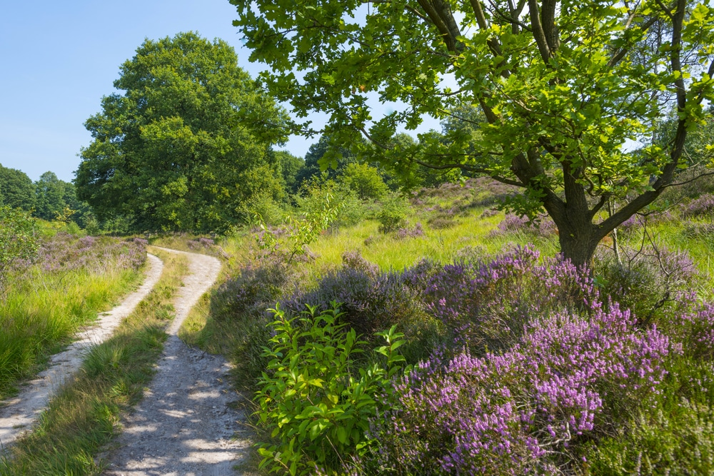
3. Meinweg National Park
In southern Limburg, Meinweg National Park is part of the larger Maas-Schwalm-Nette Nature Park along the German border. The terraced landscape rises to 80 metres above sea level. Three signposted walking routes — blue, white, and red — each take around three hours.
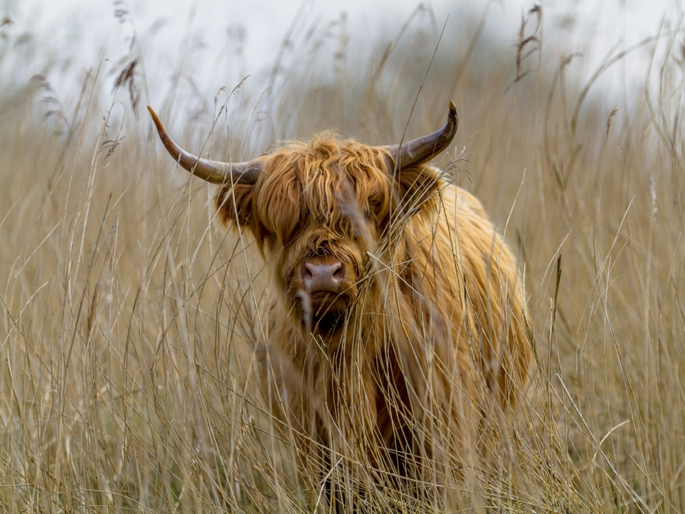
4. Lauwersmeer National Park
A man-made lake created in 1969 in Friesland and Groningen. Walkers and cyclists explore reedbeds and meadows with orchids, konik horses, and highland cattle. Tens of thousands of barnacle geese arrive in spring and autumn. The park is also a Dark Sky Park for stargazing.
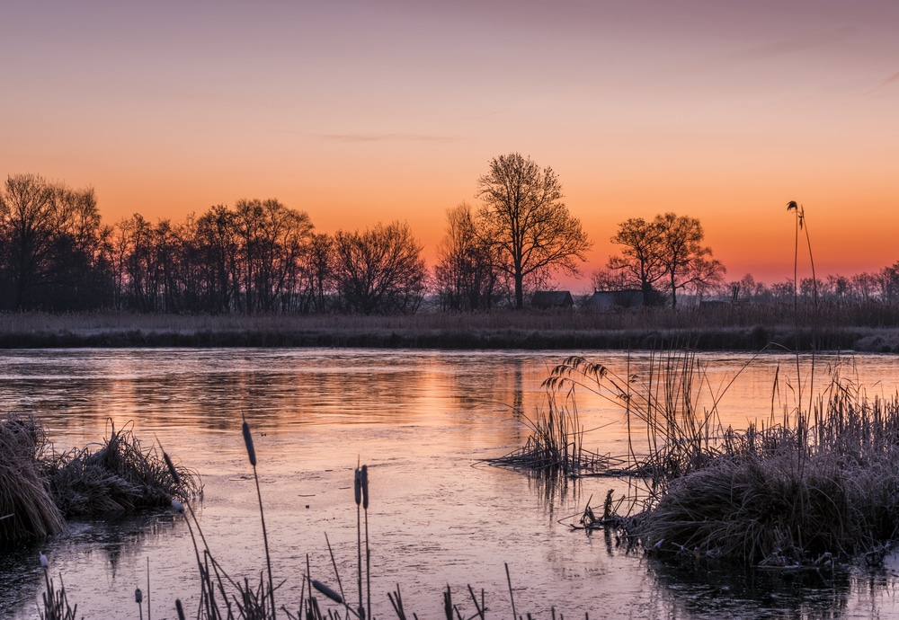
5. De Weerribben-Wieden National Park
Northwest Europe's largest fen, created by centuries of peat-cutting in Overijssel. Canoes, rowboats, and electric boats from Giethoorn offer the best view. Guided cruises from April to October highlight wildlife including cormorants and otters.
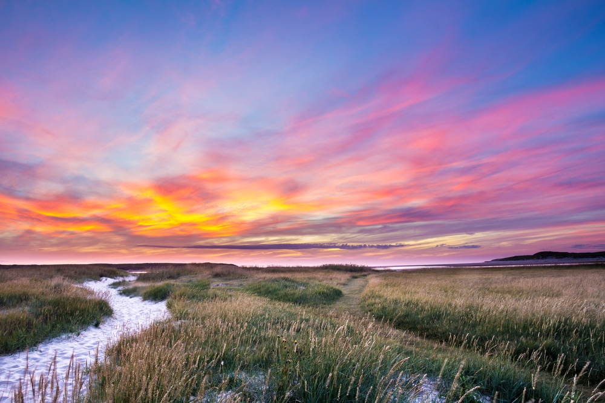
6. Schiermonnikoog National Park
Covering the Wadden Island of Schiermonnikoog, this park offers North Sea air and unspoiled nature. Trails weave through forest, beaches, creeks, and dunes. Only 200 residents own cars, keeping the island quiet. Accessible via a 45-minute ferry year-round.
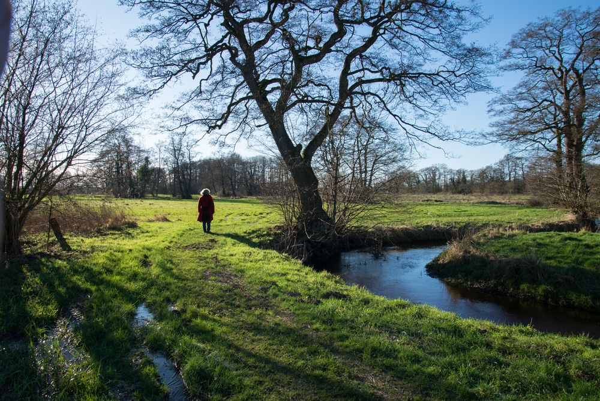
7. Drentsche Aa National Park
The Drentsche Aa meanders through Groningen and Drenthe — the Netherlands' only long river untouched by dikes or canals. Heath, woodland, dunes, and hay fields surround it, with an archaeological reserve featuring prehistoric dolmens and 60 burial mounds.
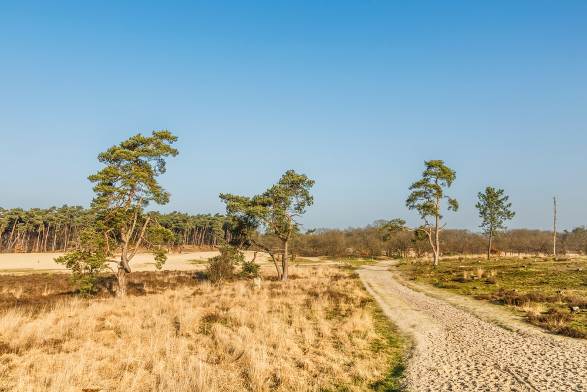
8. De Loonse en Drunense Duinen
North Brabant's "Brabant Sahara" spans 30 square kilometres of drift sand. Temperatures swing dramatically, and coniferous forests border the dunes. Trails accommodate hiking, mountain biking, and horseback riding.
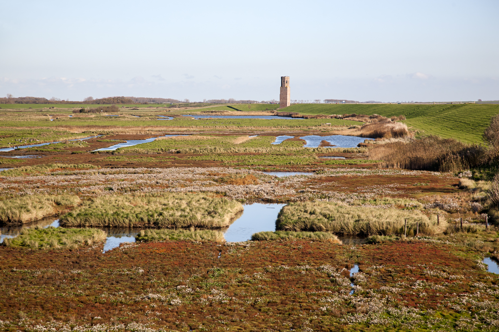
9. Oosterschelde National Park
The largest and wettest park in the Netherlands. This tidal estuary mudflats and marshes attract rich birdlife, seals, and harbour porpoises. In summer, visitors relax on beaches or swim in the sea.
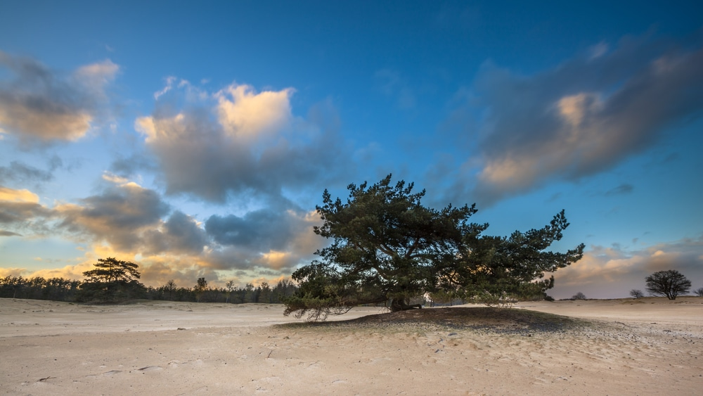
10. Drents-Friese Wold National Park
Over 6,000 hectares of heath, sand, and forest with asphalt paths for easy cycling. Sand spreads at Aekingerzand are bordered by pines, and Doldersummerveld offers roaming highland cattle with observation towers providing panoramic views.
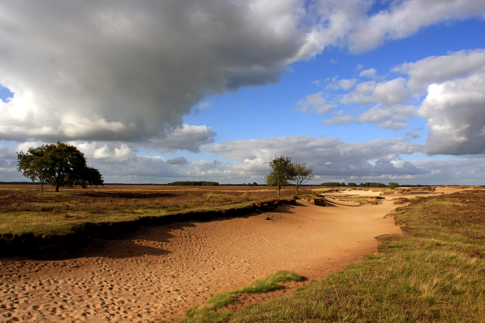
11. Dwingelderveld National Park
This 3,700-hectare spread of heathland, marshes, shifting sands, woodland, and 40+ fens preserves ancient paths, burial mounds, and Bronze Age Celtic fields. One of the largest juniper thickets in the Netherlands grows here.
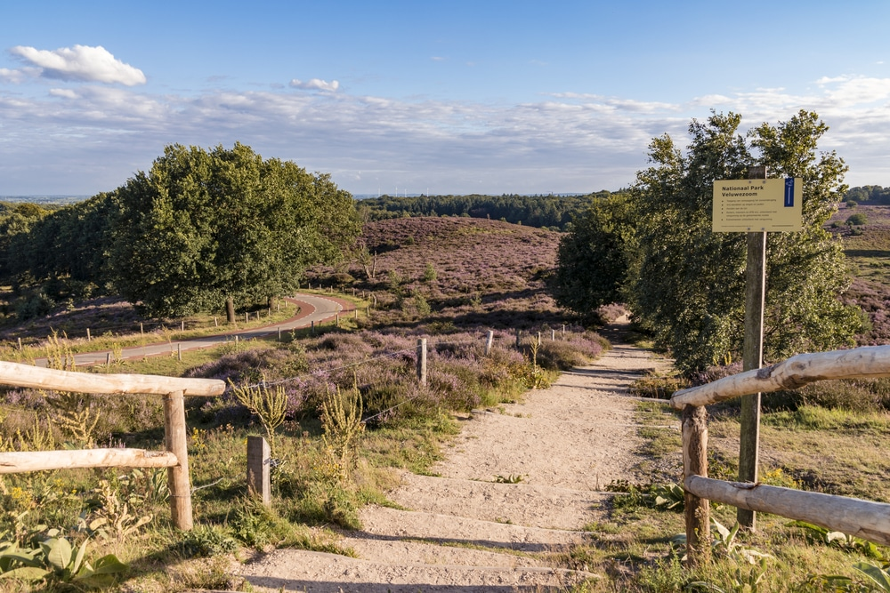
12. Veluwezoom National Park
The first national park in the Netherlands, dating to 1931. Its hills reach 110 metres and are sculpted by the Saalian Glaciation. The Posbank offers stunning views, especially when the heather blooms. Autumn is mating season for red deer.
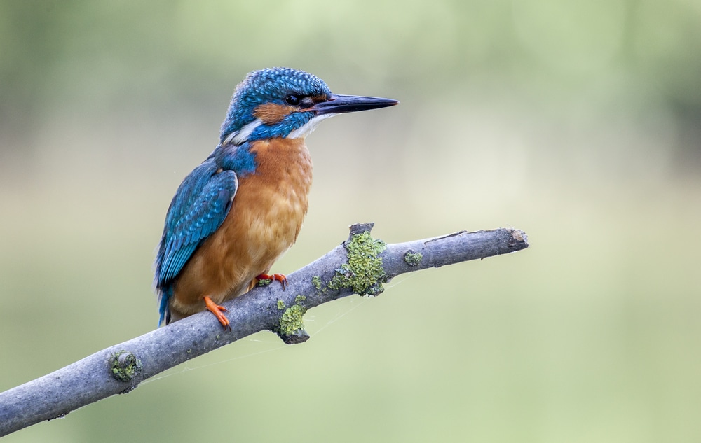
13. De Biesbosch National Park
Near Dordrecht, De Biesbosch is a freshwater tidal wetland at the Meuse and Rhine estuary. Canoes allow exploration of its network of rivers and creeks. Beavers are abundant with over 100 dams, and waterfowl thrive throughout the year.
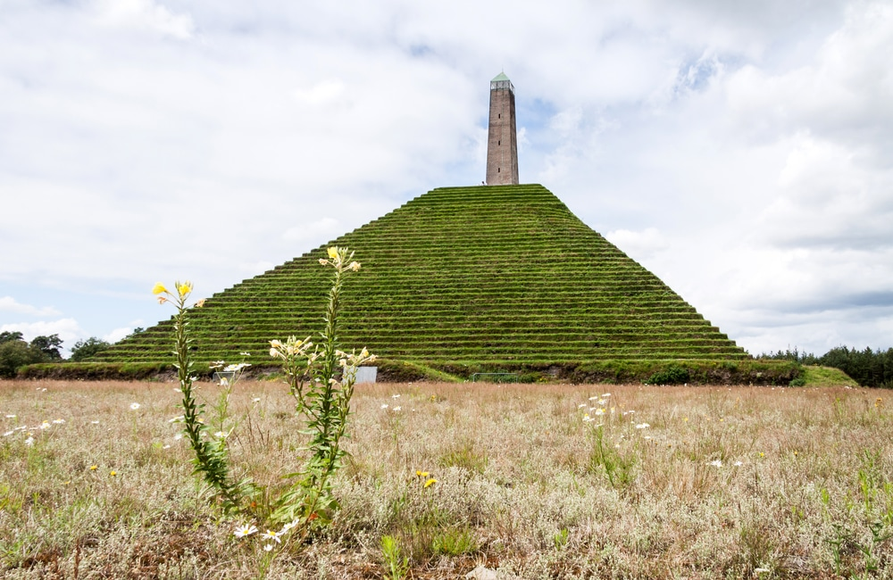
14. Utrechtse Heuvelrug National Park
A ridge formed during the Saalian Glaciation featuring sand hills, forests, meadows, and heaths. Hiking, cycling, and horseback riding are popular, with wildlife including deer, foxes, woodpeckers, and birds of prey.
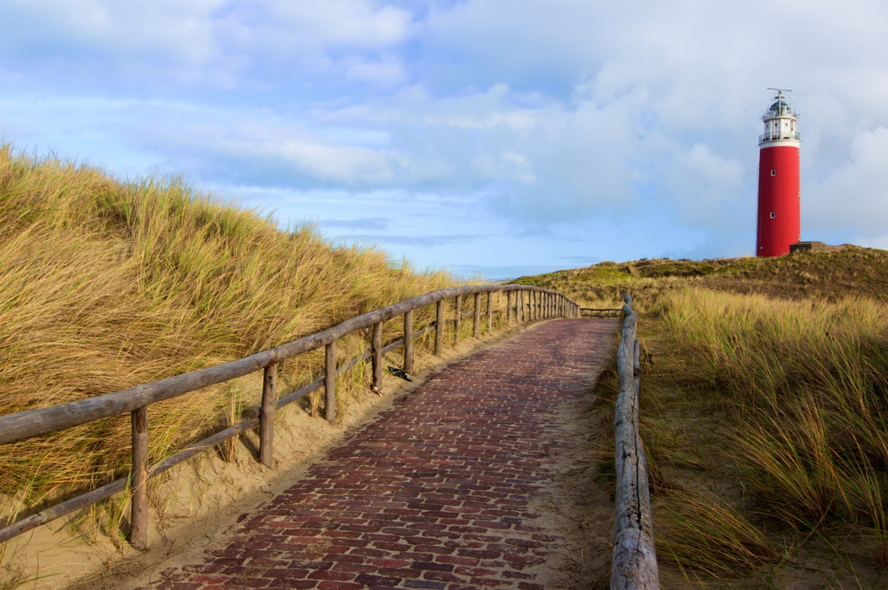
15. Dunes of Texel National Park
The west coast of Texel island features beach, dunes, heath, and woodland. De Slufter is an inundated dune valley connected to the North Sea, hosting spoonbills and eiders. The visitor centre at Ecomare combines a museum, bird sanctuary, and porpoise refuge.
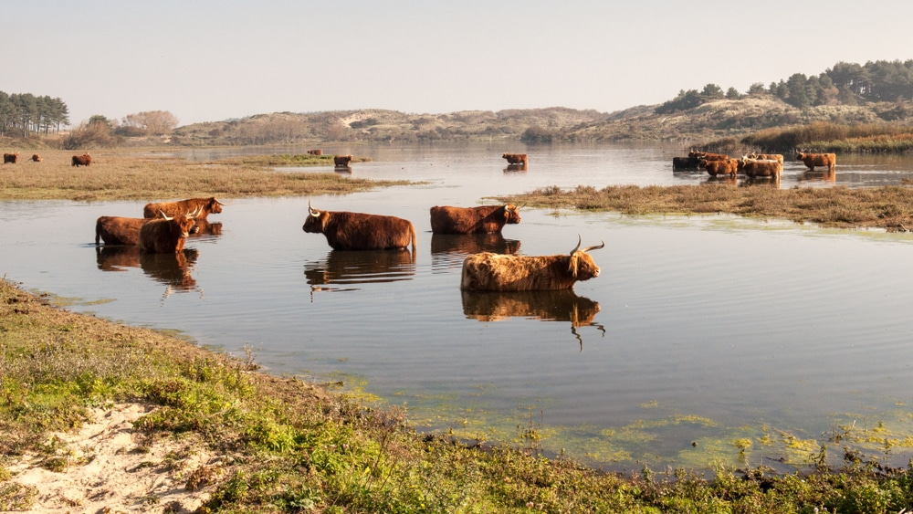
16. Zuid-Kennemerland National Park
Located on the North Holland coast, this park features dunes and opulent 17th-century estates. Visitors can hike, cycle, and explore the dunes. The Koevlak visitor centre provides information on flora and fauna, and the dunes contain WWII bunkers.
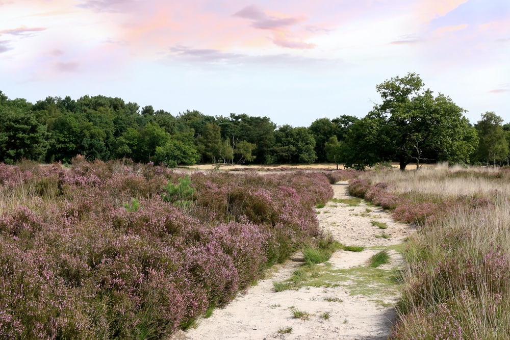
17. De Zoom – Kalmthoutse Heide
This Dutch-Belgian park covers 37 square kilometres of heathland, woodland, meadows, fens, and dunes. Birdwatchers will find woodpeckers, redbreasts, falcons, hawks, nightjars, and tree pipits.
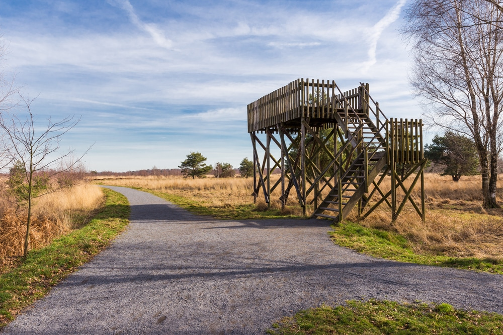
18. De Groote Peel National Park
Located in North Brabant and Limburg, De Groote Peel is uncultivated moorland with ponds and lakes from peat-cutting. Raised footbridges lead to a viewing tower, and the park hosts over 200 bird species. Late autumn sees migrating cranes.
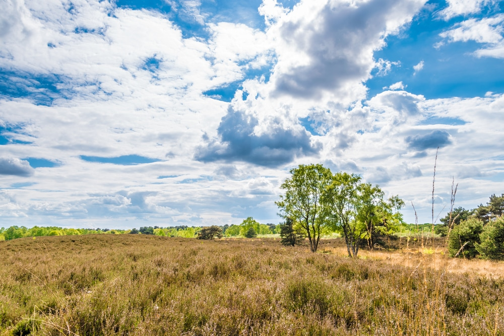
19. De Maasduinen National Park
This river-dune belt along the Meuse borders Germany in Limburg. Heathlands, woodlands, and fens are present. Birdwatchers may spot western marsh harriers, black woodpeckers, and European nightjars. Three visitor centres and camping opportunities are available.
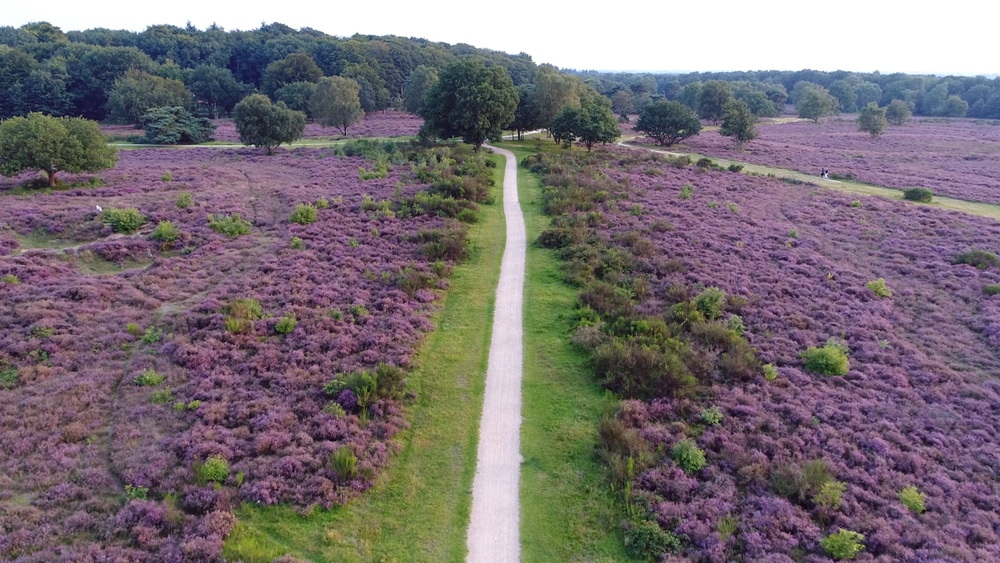
20. Sallandse Heuvelrug National Park
This heathland features hills up to 75 metres, shaped 180,000 years ago by ice sheets. Grazing sheep and cows maintain open landscapes. Hikers, cyclists, and mountain bikers are all welcome. Black grouse nest in the heather.
Continue Exploring
Discover more about what makes the Netherlands the remarkable country it is today.